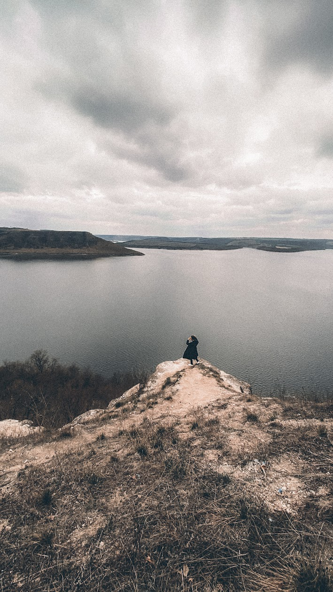
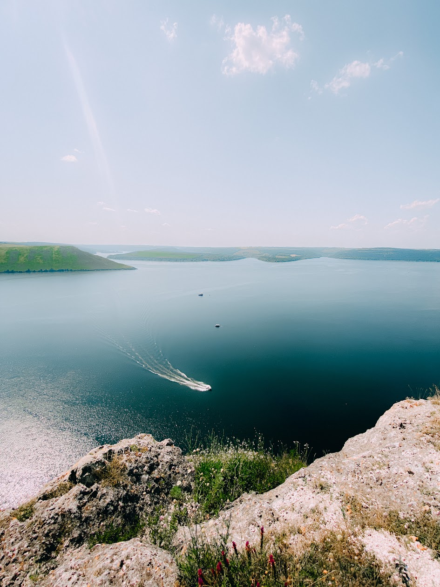
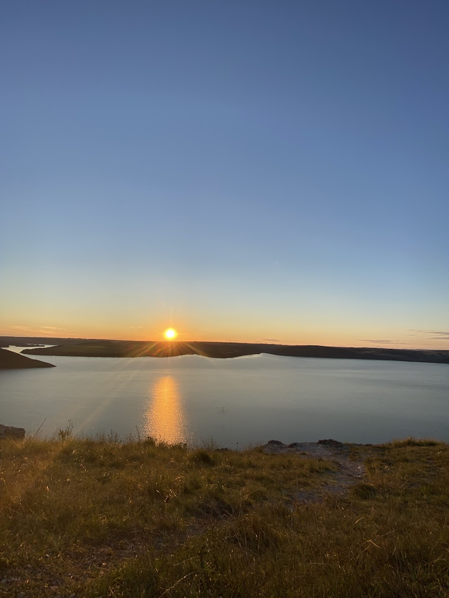

Неймовірна подорож до скельного монастиря з водними пригодами та історичними місцями
Збираємося та вирушаємо до Бакоти з Хмельницької сторони!
Дорогою буде зупинка на заправці. Але їжу та воду краще брати з дому.
Спускаємось на пляж, де можна взяти в оренду сап-борди або каяки. Вам проведуть інструктаж, видадуть спас жилет та покажуть як правильно веслувати 🚣♀️
Важливо: Оренда плав засобів оплачується окремо! Можна брати на 30 хвилин або на 1-2 години. (Вартість оренди 350 грн/година з людини. Це вже з груповою знижкою)
За цей час, інші можуть покупатись, позасмагати, та погуляти пляжем. Тут є столик, лавиці, туалети дерев'яні та джерело з водою.
Тривалість: ~3,5-4 години
Перехід лісочком на інший пляж, тут вже багато туристів, і гарні краєвиди. Кілька фото, перепочинок.
Підйом до скельного монастиря, дорогою буде джерело з водою. Заходимо в печеру оглянути.
На верху великий оглядовий майданчик та домашні пиріжки і квас 🥧
Для тих, хто любить фото локації - бонусна оглядова 🔥
Повернення через Кам'янець Подільський, там достатньо вільного часу для прогулянки старим містом та щоб смачно повечеряти.
Тут є старі будівлі, башні, і звичайно фортеця. Паркуємось саме біля старого мосту, щоб близько до усіх гарних місць.
Також є час спуститися до Смотрицького каньйону та водоспаду.
Повертаємося додому, сповнені незабутніх вражень та емоцій.
Готові до незабутньої пригоди з водними розвагами та історичними місцями? Зв'яжіться з нами для бронювання!


